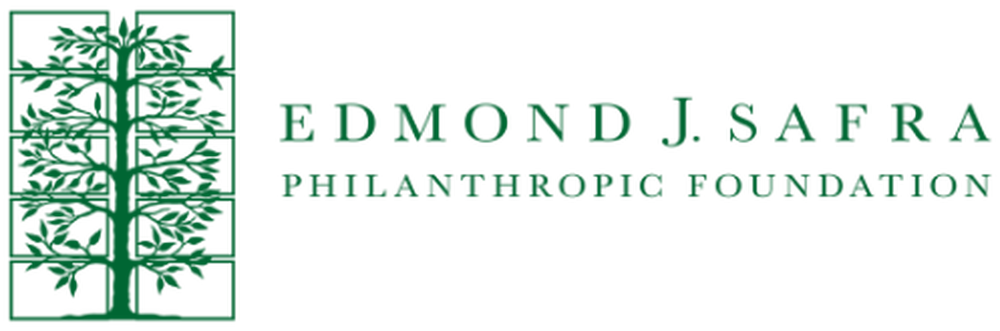
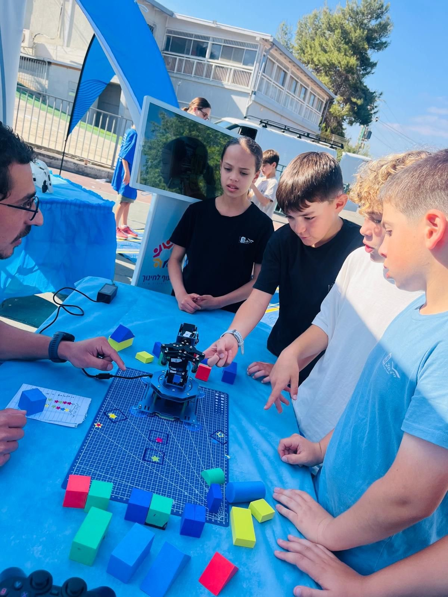
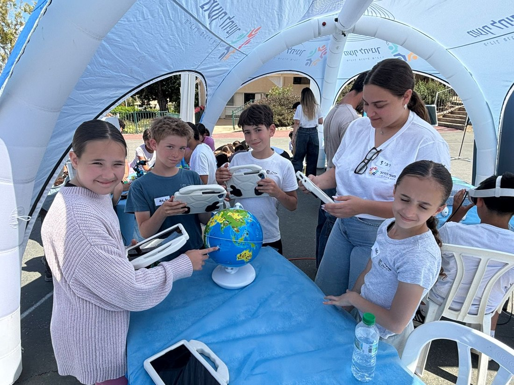
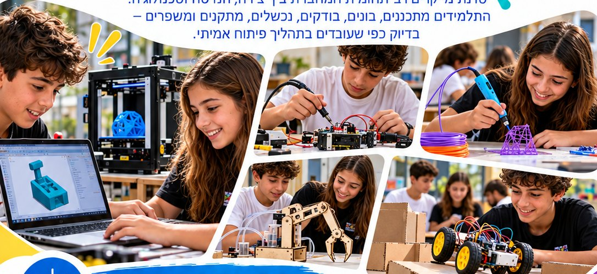
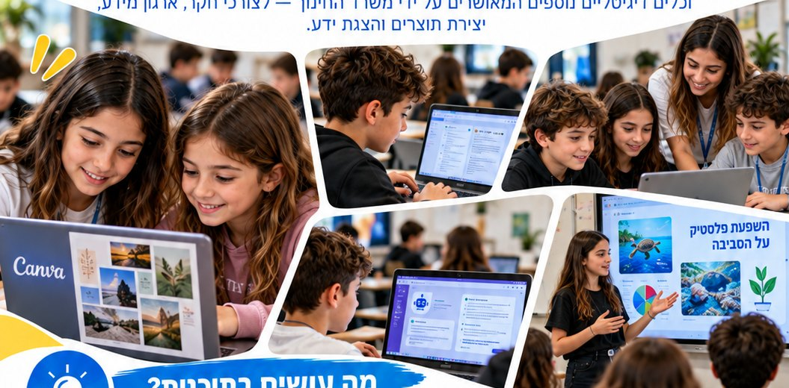

Maof Innovation Fair · real footage
PARTNERSHIP PROPOSAL
A partnership for equal opportunity in STEM, innovation & entrepreneurship
From local impact to national and global opportunity →

Maof brings technology to schools everywhere, without exception — giving every child an equal opportunity.
Not every child has equal access to
Robotics · AI · Makers · Drones · Science · Entrepreneurship
Access to innovation should not depend on where a child lives.

Maof LeChinuch · A proposal for the Edmond J. Safra Foundation
02
A mobile educational model that brings advanced technology and innovation directly into schools and communities.
No permanent innovation center is required. The innovation center comes to them.
Maof LeChinuch · A proposal for the Edmond J. Safra Foundation
03
Four mobile event formats — each turns the school into an innovation arena for a full day.
One platform · Many technologies · Every age group · National scale
Maof LeChinuch · A proposal for the Edmond J. Safra Foundation
04

Maof's Mobile Innovation Fair turns a school into a live technology arena — about 150 students, multiple technologies, one day.
Robotic Arm
Virtual Reality
Augmented Reality
Robotics
AI
Science & Coding
Engineering Challenges
Students don't watch innovation.
They touch it, build it and experience it.
Maof LeChinuch · A proposal for the Edmond J. Safra Foundation
05
An Israeli model combining large-scale mobile innovation fairs, technology mobility, continuous STEM programs and entrepreneurship pathways — from kindergarten through youth.
4 programs approved in the Ministry of Education's Gefen catalog.
About 150 students experience multiple technologies in parallel, in one day.
Robotic arm, VR, AR, drones, AI and science — in one place.
Inflatable domes and a mobile lab — in the yard, the hall or the gym.
A continuous pathway across all school years.
An operating model that can be replicated in any municipality.
Maof LeChinuch · A proposal for the Edmond J. Safra Foundation
06


KINDERGARTEN
ELEMENTARY
MIDDLE SCHOOL
YOUTH
GLOBAL TRACK
Curiosity
Exploration
First technology
Robotics
Science
Makers
Coding
AI
Engineering challenges
Hackathons
Entrepreneurship
Problem solving
International innovation & entrepreneurship
In development
A child can meet technology with Maof at age 5 — and build a global venture with Maof as a teenager.
Maof LeChinuch · A proposal for the Edmond J. Safra Foundation
07
84
vs. 37 national average
Tnufa math test · a pilot class in Nesher taught with differentiated digital learning — now a Maof program, approved in Gefen
50
Innovation fairs · ~150 students each — more than 7,500 students
20
Grade cohorts in year-long programs
4
Gefen-approved programs: Entrepreneurship Hackathon, Digital Learning in Teaching, Technological Leadership, Leadership & Safety
All in two years, since June 2024 — no donations, only volunteers.
4 municipalities
Nesher
Hof HaCarmel
Haifa
Kiryat Motzkin
Municipal partner
Citywide mapping and recommendations for Nesher — ongoing
Maof LeChinuch · A proposal for the Edmond J. Safra Foundation
08
CEO · Volunteer
Industrial & management engineer, entrepreneur and businessman.
Formerly headed a Technion R&D Foundation unit for entrepreneurship and prototyping with Rafael, Elbit, Israel Aerospace Industries and others.
Grew up in Nesher; leads Maof to create equal opportunity for children everywhere.
Brings engineering thinking, operations and scalability.
Educational & Pedagogical Lead
Develops and leads Maof's education programs; coaches teaching staff in the field.
16 years teaching at Beit Yehoshua school, Nesher — math mentor teacher and coordinator.
Her entrepreneurship project won first national prize, Yotzrim Shinui (2022).
M.A. Education Systems Management · Hotam graduate.
Manages the MoE 720 project in the Haifa District, leading it in 23 schools.
Engineering and operations, combined with pedagogical leadership — the team that built the Nesher model.
Maof LeChinuch · A proposal for the Edmond J. Safra Foundation
09
THE PARTNERSHIP
From supporting activities to a national lever for equal opportunity.
Bring advanced technology directly to children in Israel's geographic and social periphery.
Identify young talent and grow Israel's next generation of founders, inventors and leaders.
Schools · Students · Communities
Before-and-after measures
Annual impact report
The Safra Foundation can become the partner identified with bringing equal technological opportunity to every child in Israel.
Maof LeChinuch · A proposal for the Edmond J. Safra Foundation
10
NEXT STEP
Schools in Israel's geographic and social periphery — in communities chosen together with the Foundation.
Innovation fairs, science days, drone fairs and entrepreneurship hackathons throughout the school year.
Students and schools reached · STEM interest before and after · principal and teacher feedback · repeat bookings.
We'll define scope and budget together — based on the number of schools and communities. At year end: a full impact report.
Maof LeChinuch · A proposal for the Edmond J. Safra Foundation
11
PHASE 2 · THE NEXT HORIZON
In development
Founding partner opportunity
Students from the US, Singapore, Europe and Israel — working together on real-world challenges.
Putting Israeli entrepreneurship at the center — and letting the world meet the Israeli mind.
Themes: Technology · Energy · Sustainability · Environment · Social Impact
POTENTIAL FOUNDATION ROLES
Founding Partner
Scholarships for periphery students
International Partner Network
Program Design Partner
USA
Europe
Singapore
Israel
The Israeli mind
Guided by industry mentors
Maof LeChinuch · A proposal for the Edmond J. Safra Foundation
12
One partnership. Two levels of impact.
Bringing technology to every child.
Taking young innovators to the world.
Edmond J. Safra Foundation × Maof LeChinuch